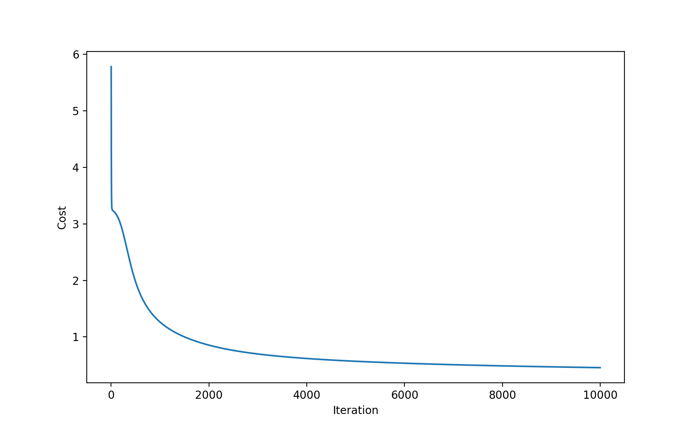
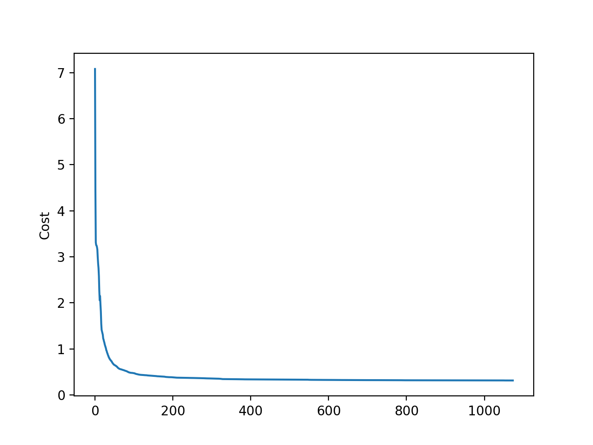

[吴恩达机器学习]8·神经网络之反向传播
吴恩达机器学习系列课程：https://www.bilibili.com/video/BV164411b7dx
代价函数
回顾正则化逻辑回归的代价函数： \[ J(\theta)=-\frac{1}{m}\left[\sum_{i=1}^my^{(i)}\ln(h_\theta(x^{(i)}))+(1-y^{(i)})\ln(1-h_\theta(x^{(i)}))\right]+\frac{\lambda}{2m}\sum_{j=1}^n\theta_j^2 \] 我们在第四篇中通过极大似然法解释了它的来历，这个代价函数被称作「交叉熵代价函数」，与我们在线性回归中使用的「二次代价函数」形成对比。
在神经网络中，我们沿用交叉熵代价函数。具体地，对于一个 \(K\) 分类的神经网络而言，它可以看作是从输入到 \(K\) 个二分类输出的过程：\(x\mapsto h_\Theta(x)\)，我们设其代价函数为每一个二分类的交叉熵代价函数之和： \[ J(\Theta)=-\frac{1}{m}\left[\sum_{i=1}^m\sum_{k=1}^Ky^{(i)}_k\ln\left(h_\Theta(x^{(i)})_k\right)+(1-y_k^{(i)})\ln\left(1-h_\Theta(x^{(i)})_k\right)\right]+\frac{\lambda}{2m}\sum_{l=1}^{L-1}\sum_{i=1}^{s_l}\sum_{j=1}^{s_{l+1}}\left(\Theta_{ji}^{(l)}\right)^2 \]
其中：\(h_\Theta(x^{(i)})\in\mathbb R^K\)，表示从第 \(i\) 个输入经由神经网络得到的输出结果，\(h_\Theta(x^{(i)})_k\) 表示其第 \(k\) 维.
注意这里有一个符号混用的地方：上标 \(^{(i)}\) 在 \(x^{(i)}\) 和 \(y^{(i)}\) 中表示第 \(i\) 个数据的输入（\(\in\mathbb R^{n+1}\)）和输出（\(\in\mathbb R^{K}\)），但是在 \(\Theta^{(l)}\) 中表示第 \(l\) 层的 \(\Theta\)（\(\in \mathbb R^{s_{l+1}\times (s_l+1)}\)）.
现在我们的目标即是最小化代价函数 \(J(\Theta)\)，并找到最小时的参数 \(\Theta\).
我们欲使用梯度下降法解决这个问题，所以我们需要计算 \(\frac{\partial J}{\partial \Theta_{ji}^{(l)}}\)，计算方法就是反向传播算法。
反向传播算法
推导
为了推导方便，先假设只有一组数据 \((x,y)\)，这样可以省去上标和求和的麻烦。我们对第 \(l+1\) 层的第 \(j\) 个神经元定义一个误差： \[ \delta_j^{(l+1)}=\frac{\partial J}{\partial z_j^{(l+1)}} \] 其中 \(z_j^{(l+1)}=\sum\limits_{k=0}^{s_{l}}\Theta^{(l)}_{jk}a^{(l)}_{k}\)，其实就是把对 \(a_j^{(l+1)}\) 的逻辑回归单独拎出来看，取 \(\text{sigmoid}\) 前的那个求和值。换句话说，\(a^{(l+1)}_j=g\left(z_j^{(l+1)}\right)\).
于是乎，我们有： \[ \frac{\partial J}{\partial \Theta^{(l)}_{ji}}=\frac{\partial J}{\partial z_j^{(l+1)}}\cdot\frac{\partial z_j^{(l+1)}}{\partial\Theta_{ji}^{(l)}}=a_i^{(l)}\delta_j^{(l+1)} \] 写作矩阵形式： \[ \color{purple}{\boxed{\Delta^{(l)}=\delta^{(l+1)}\cdot(a^{(l)})^T}} \] 所以现在问题转化为求解 \(\delta^{(l+1)}\).
采用递推的思想。首先来算输出层，即 \(\delta_j^{(L)}\)： \[ \begin{align} \delta_j^{(L)}&=\frac{\partial J}{\partial z_j^{(L)}}=\frac{\partial J}{\partial a_j^{(L)}}\cdot\frac{\partial a_j^{(L)}}{\partial z_j^{(L)}}\\ &=\frac{\partial J}{\partial a_j^{(L)}}\cdot g'\left(z_j^{(L)}\right)\\ &=-\left(\frac{y_j}{a_j^{(L)}}-\frac{1-y_j}{1-a_j^{(L)}}\right)\cdot\left(a_j^{(L)}(1-a_j^{(L)})\right)\\ &=a_j^{(L)}-y_j \end{align} \]
所以： \[ \color{purple}{\boxed{\delta^{(L)}=a^{(L)}-y}} \]
上面推导过程的一些注释：
关于第二行，请注意：\(a^{(L)}=g(z^{(L)})\)；
关于第三行，请注意 \(\text{sigmoid}\) 函数的一个很好的性质：\(g'(z)=g(z)(1-g(z))\)；
以及，关于偏导项的计算，请注意 \(a^{(L)}=h_\Theta(x)\)，所以 \(J(\Theta)\) 在现在的假设条件下可以写作： \[ J(\Theta)=-\left[\sum_{k=1}^Ky_k\ln(a^{(L)}_k)+(1-y_k)\ln(1-a_k^{(L)})\right]+\frac{\lambda}{2}\sum_{l=1}^{L-1}\sum_{i=1}^{s_l}\sum_{j=1}^{s_{l+1}}\left(\Theta_{ji}^{(l)}\right)^2 \]
现在计算第 \(l\) 层（\(2\leqslant l<L\)）的 \(\delta^{(l)}\)： \[ \begin{align} \delta_j^{(l)}&=\frac{\partial J}{\partial z_j^{(l)}}\\ &=\frac{\partial J}{\partial z^{(l+1)}}\cdot\frac{\partial z^{(l+1)}}{\partial a_j^{(l)}}\cdot\frac{\partial a_j^{(l)}}{\partial z_j^{(l)}}\\ &={\delta^{(l+1)}}^T\Theta^{(l)}_{\bullet,j}\cdot g'(z_j^{(l)})\\ &={\delta^{(l+1)}}^T\Theta^{(l)}_{\bullet,j}\cdot \left(a_j^{(l)}*(1-a_j^{(l)})\right) \end{align} \] 所以： \[ \color{purple}{\boxed{\delta^{(l)}=\left({\Theta^{(l)}}^T\delta^{(l+1)}\right)*\left(a^{(l)}*(1-a^{(l)})\right)}} \] 其中 \(*\) 表示两个向量对应位置相乘。
步骤总结
以上是对一组数据的推导，我们得到了三个重要的结果： \[ \boxed{ \begin{align} &\Delta^{(l)}=\delta^{(l+1)}\cdot(a^{(l)})^T&&1\leqslant l<L\\ &\delta^{(L)}=a^{(L)}-y\\ &\delta^{(l)}=\left({\Theta^{(l)}}^T\delta^{(l+1)}\right)*\left(a^{(l)}*(1-a^{(l)})\right)&&2\leqslant l<L \end{align}} \] 而 \(m\) 组数据只需要在一些地方进行累加即可，具体如下：
设数据集为：\(\left\{(x^{(i)},y^{(i)})\mid 1\leqslant i\leqslant m\right\}\)，则反向传播算法的步骤为： 1. 所有 \(\Delta^{(l)}\) 置零；
遍历数据集，设当前数据为 \((x^{(i)},y^{(i)})\)：
- 以 \(x^{(i)}\) 为输入做前向传播，得到输出 \(a^{(L)}\)；
- 置 \(\delta^{(L)}=a^{(L)}-y^{(i)}\)，进行反向传播：\(\delta^{(l)}={\Theta^{(l)}}^T\delta^{(l+1)}*\left[a^{(l)}(1-a^{(l)})\right],\;2\leqslant l<L\)；
- 更新 \(\Delta\) 矩阵：\(\Delta^{(l)}:=\Delta^{(l)}+\delta^{(l+1)}\cdot(a^{(l)})^T,\;1\leqslant l<L\)；
计算 \(D\) 矩阵： \[ D_{ij}^{(l)}:=\begin{cases} \frac{1}{m}\left(\Delta_{ij}^{(l)}+\lambda\Theta_{ij}^{(l)}\right)&\text{if }j\neq0\\ \frac{1}{m}\Delta_{ij}^{(l)}&\text{if }j=0 \end{cases} \] 这就是我们的偏导数矩阵：\(\frac{\partial J}{\partial \Theta_{ij}^{(l)}}=D^{(l)}_{ij}\).
现在，我们可以用 \(D_{ij}^{(l)}\) 做梯度下降了。注意一点，我们的参数 \(\Theta^{(l)}\) 应该初始化为 \([-\epsilon,\epsilon]\) 中的随机值。
梯度检验
写神经网络反向传播的代码时很容易写 bug，包括一些从结果并不能发现的 bug。梯度检验可以帮助发现这些 bug。
我们可以数值近似 \(J(\theta)\) 的各偏导： \[ \frac{\partial}{\partial \theta_k}J(\theta)\approx\frac{J(\theta_1,\cdots,\theta_k+ \epsilon,\cdots,\theta_n)-J(\theta_1,\cdots,\theta_k- \epsilon,\cdots,\theta_n)}{2\epsilon} \]
现在我们可以比较这些偏导估计值与 \(D_{ij}^{(l)}\) 对应位置的值，它们应该非常接近。
注意一点：梯度检验耗时巨大，一旦验证了神经网络反向传播的代码正确后，不应进行梯度检验（删掉/注释掉）。
实现
这次用的数据集依旧是手写数字识别的数据集，共 \(5000\) 组数据，每组数据输入是一个由 \(20\times20\) 灰度矩阵压缩而来的 \(400\) 维向量，输出是 \(0\) 到 \(9\) 之间的整数。
第一部分·代价函数与前向传播
前向传播与上一节的代码没有什么本质的区别，不过这里将其一般化，可适用于 \(L\) 层的神经网络且 \(m\) 个数据同时计算：
1 | |
当然只计算一个数据也是可以的：
1 | |
代价函数及其正则化：
1 | |
使用 ex4weights.mat 中给定的参数 \(\Theta\)，在无正则化时，准确率为 \(97.52\%\)，代价为 \(0.28762916516131865\)；
在正则化时（\(\lambda=1\)），准确率为 \(97.52\%\)，代价为 \(0.3844877962428937\)。
第二部分·反向传播
反向传播算法：
1 | |
梯度下降：
1 | |
梯度检验（把这段代码插入到梯度下降计算出 \(D\) 矩阵之后的地方即可）：
1 | |
现在我们可以开始训练了！代价随迭代次数增加的变化如下：

准确率如下：
| 数字 | 准确率 |
|---|---|
| 0 | 98.6% |
| 1 | 97.8% |
| 2 | 93.4% |
| 3 | 93.4% |
| 4 | 97.0% |
| 5 | 93.8% |
| 6 | 97.8% |
| 7 | 95.6% |
| 8 | 95.8% |
| 9 | 94.0% |
| Total | 95.72% |
自己写的梯度下降跑得很慢，以后尝试使用
scipy.optimize.minimize.
\(\textbf{Update 2021.01.04}\)：使用了 scipy.optimize.minimize 来最小化 \(J(\Theta)\)，method 选用 \(\text{CG}\)，结果如下：
1 | |

| 数字 | 准确率 |
|---|---|
| 0 | 99.8% |
| 1 | 100.0% |
| 2 | 99.4% |
| 3 | 99.4% |
| 4 | 99.2% |
| 5 | 99.8% |
| 6 | 99.6% |
| 7 | 99.6% |
| 8 | 100.0% |
| 9 | 99.0% |
| Total | 99.58% |
当然，再次强调，由于没有划分训练集、验证集、测试集，这个准确率并不能说明问题。